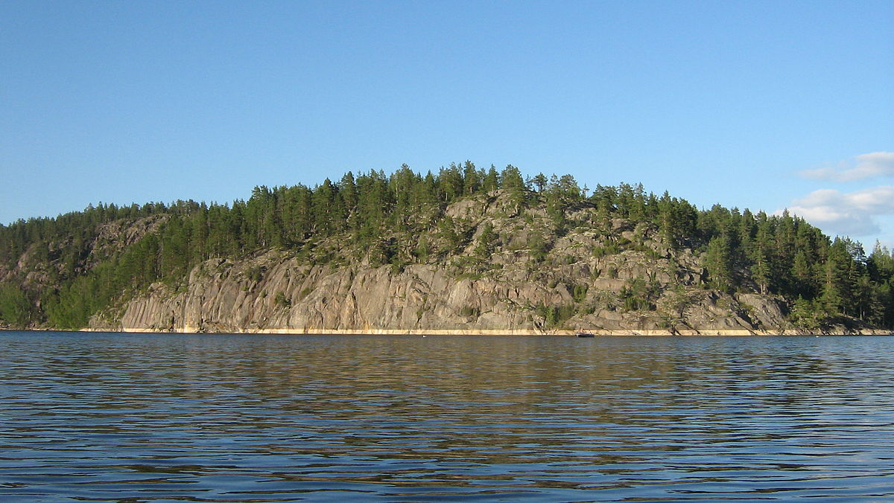
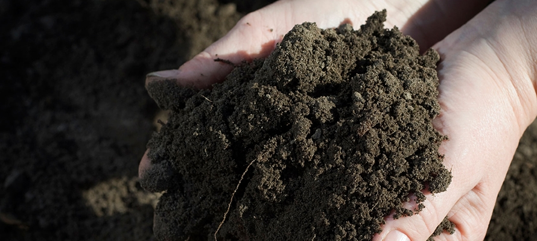
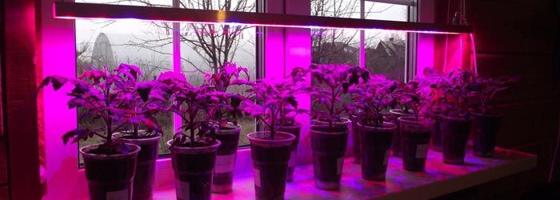
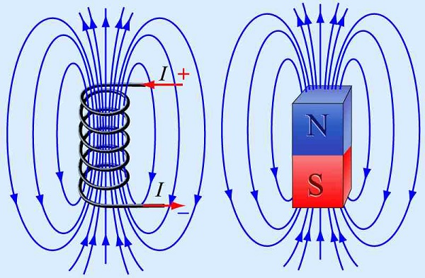

Актуальность: Наличие лесов на планете Земля обеспечивает жизнь на планете. В Карелии находится много лесных ресурсов.
Цель работы:
1) Выяснить оптимальные условия вегетации лесов Карелии, на теоретическом уровне.
2) Практически изучить некоторые свойства прорастания семян, условий хранения древесины,
Гипотеза: Если практически изучить некоторые свойства прорастания семян, условий хранения древесины, изменения размеров тела при изменение влажности, то это позволит более бережно использовать древесину, что приведет к сохранению лесов Карелии.
Задачи исследования:
1. Описать месторасположение, климат, ландшафт Республики Карелия.
2. Дать понятие лесов Карелии. Виды растительности .
3. Раскрыть оптимальные условия вегетации растений в условиях климата Карелии.
4. Практически изучить некоторые свойства прорастания семян в зависимости от наличия магнитного поля в условиях пониженной влажности помещения.
5. Измерить изменения размеров тела при изменении влажности.
6. Сравнить деформацию прогиба для ели, сосны, осины, находящихся в состоянии с повышенной влажностью.
Республика Карелия расположена в северо-западной части России. На северо-востоке омывается Белым морем.
Карелия находится в северо-западной части умеренного климатического пояса. Климатический режим характеризуется как переходный от морского к континентальному.
В Карелии мягкий климат с обилием осадков, меняется от морского к умеренно-континентальному. Зима снежная, прохладная, но обычно без сильных морозов. Лето непродолжительное и теплое, с большим количеством осадков. На протяжении всего года преобладает пасмурное состояние неба.
Карелия имеет холмисто-моренный рельеф от 100 до 250 метров над уровнем моря. Наиболее возвышенные места - на западе и северо-западе республики, наименее возвышенные - в районах, прилегающих к Белому морю, Ладожскому и Онежскому озерам. Наивысшая точка Карелии – это гряда Манселькя (до 576 м), которая находится на северо-западе Карелии.
 Важную роль в создании современного рельефа республики сыграло оледенение ее территории. Ледники и ледниковые воды придали рельефу специфический облик: сглаженные валуны и скалы - "бараньи лбы", волнистые песчаные равнины, высокие галечно-песчаные насыпи – "озы", вытянутые с северо-запада на юго-восток каменистые гряды и кряжи - "сельги". Из этого можно сделать вывод, что из-за холодной зимы и короткого нежаркого лета вегетация растений не может происходить круглый год, поэтому вегетация леса, да и других растений проходит только во время вегетационного периода, который начинается в Мае и заканчивается в Октябре.
Особенности почвенно-растительного покрова Карелии связаны, с одной стороны, с историей формирования территории, обусловившей ее геолого-геоморфологическое строение, с другой с современными климатическими условиями. Почвенный покров региона очень молод. На выступах коренных пород и крутых склонах он нередко отсутствует. С молодостью территории и широким распространением относительно стойких против разрушения пород связан каменисто-щебнистый состав и песчаный субстрат почвы. С характером субстрата связано господство в растительном покрове сосновых лесов и болот. Территория Карелии расположена в зоне тайги. Почвообразование в таежной зоне происходит в условиях прохладного и  влажного климата преимущественно под хвойными лесами с покровом из кустарничков и мхов. Вследствие избыточного увлажнения в таежной зоне наблюдается промывание почвы. Поэтому на территории Республики Карелии наиболее широко распространены подзолистые почвы. Все разновидности подзолов имеют сильнокислую реакцию и низкую насыщенность верхних горизонтов основаниями. Влажный климат и близкое залегание кристаллических пород, являющихся водоупорными, и малые тепловые ресурсы создают условия для переувлажнения и заболачивания, что приводит к медленной гумификации.
Так же для развития растений нужно солнце. Инсоляция — облучение поверхностей солнечным светом. Фактически инсоляция зависит от ее ориентации относительно юга, угла к горизонту, конфигурации застройки вокруг, деревьев, температуры, но самое главное – широты местности и как следствие времени года.
Для фотосинтеза в клетке должен быть хлорофилл, но при снижении освещенности листа содержание хлорофилла уменьшается. В итоге интенсивность света влияет на скорость транспирации, синтез хлорофилла, обмен веществ, раскрытие устьиц, и тем самым, на рост, размеры и строение растения.
Из этого можно сделать вывод, что неплодородная почва, переизбыток влажности, малое количество солнечных дней и холодный климат делает Карелию не лучшим регионом для вегетации растений, поэтому Карелию относит к зоне рискованного земледелия.
Рост дерева в Карелии занимает довольно продолжительное время. В то время как вырубки леса с каждым годом только увеличиваются. Лес не успевает восстанавливаться, а его отсутствие может привезти к экологической катастрофе. Так как исчезнут места обитания диких животных, выработка кислорода уменьшится. Решением этой проблемы является сокращение вырубки леса, но в данный момент это не возможно, так как большая часть экономики Карелии связанна именно с лесным экспортом. Поэтому мы поставили вопрос: «Если нельзя сократить вырубку леса, то как можно ускорить рост прорастания семян?». Мы нашли пару способов, которые смогут увеличить скорость роста семян.
Карелии связаны, с одной стороны, с историей формирования территории, обусловившей ее геолого-геоморфологическое строение, с другой с современными климатическими условиями. Почвенный покров региона очень молод. На выступах коренных пород и крутых склонах он нередко отсутствует. С молодостью территории и широким распространением относительно стойких против разрушения пород связан каменисто-щебнистый состав и песчаный субстрат почвы. С характером субстрата связано господство в растительном покрове сосновых лесов и болот. Территория Карелии расположена в зоне тайги. Почвообразование в таежной зоне происходит в условиях прохладного иПервый способ: Дополнительное освещение. Солнечный свет состоит из спектров.  И для растений определенные спектры света заставляют их активнее вырабатывать сахарозу, а в следствии и быстрее расти. Инфракрасные лучи ускоряют процессы растяжения клеток. Лучи с короткой длиной волны стимулируют процессы деления клеток. Под влиянием красных лучей задерживаются процессы деления клеток и ускоряется фаза ее растяжения. Именно большим поглощением коротковолновой части спектра объясняется то, что при выращивании растений в оранжереях и теплицах, они вытягиваются в длину. Физиологическая радиация сине-фиолетовой части спектра активизирует образование белков, красно-оранжевой - углеводов. Так же стоит учитывать, что спектральный состав солнечного излучения изменяется с изменением размещения Солнца над горизонтом. Это влияет на особенности протекания метаболических процессов у растений. В итоге если использовать дополнительное освещение к естественному свету. А именно лампы синего, красного и ультрафиолетового спектра, то можно увеличить скорость роста растений.
Второй же способ – Магнитное поле. Магнитное поле влияет на рост,  формирование растений и увеличивает скорость роста корня. Также магнитное поле может влиять на направление роста корней. В частности, от направления магнитного поля относительно зародышей семян зависят функционально-биохимические свойства растений. К тому же магнитное поле оказывает влияние не только на корневую систему растения, но и на развития стебля и листьев.
После исследовательских опытов мы пришли к следующим выводам: Магнитное поле влияет на рост и формирование растений и увеличивает скорость прорастания семян. В научной литературе отражена зависимость функционально-биохимических свойств растений, развившихся из семян от направления магнитного поля. При повышенной влажности необработанная древесина быстро впитывает воду, в течение двух недель образуется плесень, которая сохраняется при сушке древесины. В условиях повышенной влажности древесина увеличивается в размерах. Лес нужно сохранять, так как он очень долго восстанавливается, а вырубки идут слишком интенсивно. Эти знания помогут нам бережно и экономично использовать лесное богат РК.
Работу выполнил ученик 11а класса Дмитриев Руслан Максимович